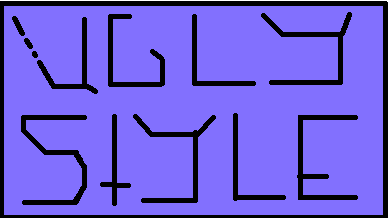

INVASION DAY

Websites I Frequent:
Knowing Less, Less Wrong, Hambacher Forest, Slate Star Codex, siderea, thing of things, Poorly Drawn Lines Comic, Mystic Mamma, XKCD, Hitchwiki, Trustroots
Knowing Less, Less Wrong, Hambacher Forest, Slate Star Codex, siderea, thing of things, Poorly Drawn Lines Comic, Mystic Mamma, XKCD, Hitchwiki, Trustroots
